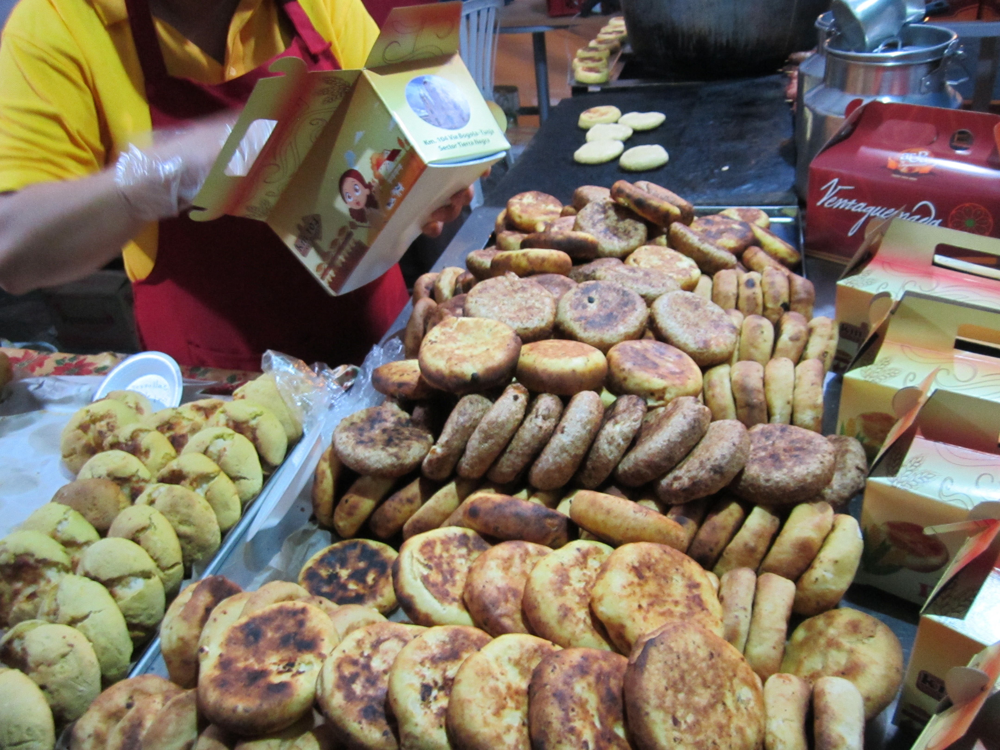

Arepa Boyacense

What is an Arepa Boyacense?
Arepa Boyacense is a typical recipe of the department of Boyacá, located in the Andean region of Colombia. It is prepared with precooked corn flour, flour, sugar and fresh cheese. It is famous for its contrast of salty flavors (cheese) with sweet flavors (the dough). It is mostly consumed in the department of Boyacá, in the department of Cundinamarca and in the city of Bogotá.
Ingredients
- 2 cups of precooked yellow corn flour
- 5 tablespoons of wheat flour
- 1 and a half cups of hot water
- Half a cup of milk
- Quarter of a teaspoon of salt
- 2 tablespoons of sugar
- 3 tablespoons of softened butter
- 2 cups of fresh cheese or Colombian quesito
Steps
- In a medium bowl mix the masarepa, flour, water, milk, salt, sugar and butter. Knead with your hands for about 3 minutes, wetting your hands with water as you work.
- Form the dough into 12 small balls. Place each ball between 2 plastic bags or parchment paper, and with a flat top, flatten to approximately.
- Place the cheese in the center of half of one of the dough circles and then place another circle on top to cover. With your fingers, seal the edges around the cheese, which will prevent the cheese from spilling out.
- Add the butter to a nonstick skillet over medium heat. Place the arepas in the pan and cook for about 3 minutes on each side, until golden brown. Serve immediately.
Back to all recipes